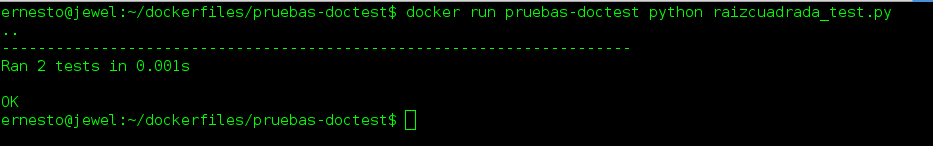

Ejecutar una prueba de unittest en Python con un contenedor Docker.
Posted on dom 27 marzo 2016 in Tutorial Python • 3 min read
En este artículo prácticamente se hará lo mismo que el artículo anterior, pero se creará un archivo donde se define una clase la cual hará las pruebas unitarias.
La parte de pruebas unitarias se basa de un post anterior que se llama Pruebas unitarias con unittest en Python.
Los artículos anteriores sobre docker son:
1. Instalar Docker en Debian Jessie
-
Iniciando Django con docker usando docker-compose con postgresql como microservicio.
-
Crear un entorno de Integración y Despligue continue con Docker para node.js.
Ahora se tendrán los siguientes archivos en el directorio pruebas-doctest:
pruebas-doctest
├── Dockerfile
├── raizcuadrada.py
├── raizcuadrada_test.py
└── raizcuadrada.txt
El Dockerfile, raizcuadrada.py y raizcuadrada.txt son los mismos del artículo anterior.
El archivo raizcuadrada_test.py tiene lo siguiente:
#!/usr/bin/env python
# -*- coding: utf-8 -*-
#Se importa el módulo unittest y math
import unittest
#Se importa la funcion Raiz del modulo raizcuadrada
from raizcuadrada import Raiz
class RaizTest(unittest.TestCase):
def test_Raiz(self):
"""Test para la raiz de nueve que devuelve 3 que debe pasar."""
self.assertEqual(3, Raiz(9))
def test_zero(self):
"""Test para la raiz de 0 que devuelve 0, que debe pasar."""
self.assertEqual(0, Raiz(0))
def test_negative(self):
"""Test para la raiz de un número negativo, que debe fallar."""
# Este debe devolver un ValueError, pero se espera un IndexError.
self.assertRaises(IndexError, Raiz(-10))
if __name__ == '__main__':
#Se ejecuta la prueba unitaria
unittest.main()
Ahora se reconstruye la imagen de Docker:
docker build -t pruebas-doctest .
Sending build context to Docker daemon 7.68 kB
Step 1 : FROM python:3.4
---> c40d327867e9
Step 2 : MAINTAINER Ernesto Crespo
---> Using cache
---> 3b1aced33b5e
Step 3 : WORKDIR /app
---> Using cache
---> 7dd09842cf61
Step 4 : COPY . /app
---> 842cd3bd051f
Removing intermediate container 140eaaf7935f
Successfully built 842cd3bd051f
Y se ejecuta la prueba:
docker run pruebas-doctest python raizcuadrada_test.py
.E.
======================================================================
ERROR: test_negative (__main__.RaizTest)
Test para la raiz de un número negativo, que debe fallar.
----------------------------------------------------------------------
Traceback (most recent call last):
File "raizcuadrada_test.py", line 25, in test_negative
self.assertRaises(IndexError, Raiz(-10))
File "/app/raizcuadrada.py", line 22, in Raiz
raise ValueError("a debe ser >= 0")
ValueError: a debe ser >= 0
----------------------------------------------------------------------
Ran 3 tests in 0.002s
FAILED (errors=1)
Está primera prueba se preparó para que fallara, ahora se comenta el método de prueba negativa, se reconstruye la imagen y se vuelve a ejecutar:
docker build -t pruebas-doctest .
Sending build context to Docker daemon 7.68 kB
Step 1 : FROM python:3.4
---> c40d327867e9
Step 2 : MAINTAINER Ernesto Crespo
---> Using cache
---> 3b1aced33b5e
Step 3 : WORKDIR /app
---> Using cache
---> 7dd09842cf61
Step 4 : COPY . /app
---> 609702415974
Removing intermediate container e2174beb4f7c
Successfully built 609702415974
docker run pruebas-doctest python raizcuadrada_test.py
..
----------------------------------------------------------------------
Ran 2 tests in 0.001s
OK

Se ejecutaron 2 test y pasaron.
Ya con esta imagen de Docker se puede reusar en varios computadores teniendo el mismo ambiente de desarrollo.
¡Haz tu donativo! Si te gustó el artículo puedes realizar un donativo con Bitcoin (BTC) usando la billetera digital de tu preferencia a la siguiente dirección: 17MtNybhdkA9GV3UNS6BTwPcuhjXoPrSzV
O Escaneando el código QR desde la billetera: